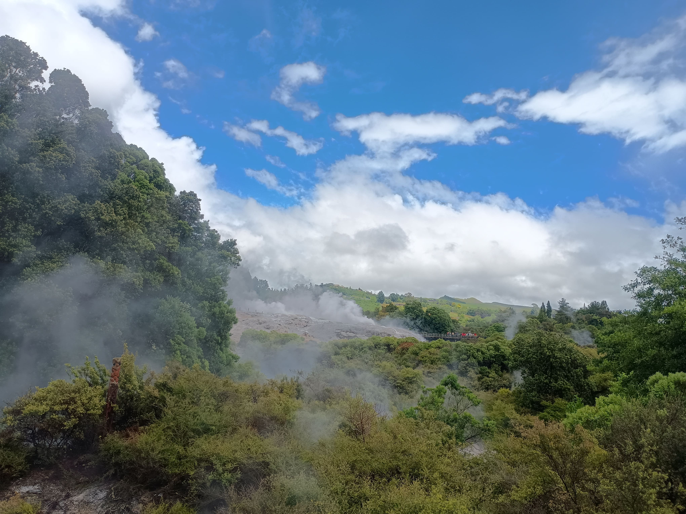
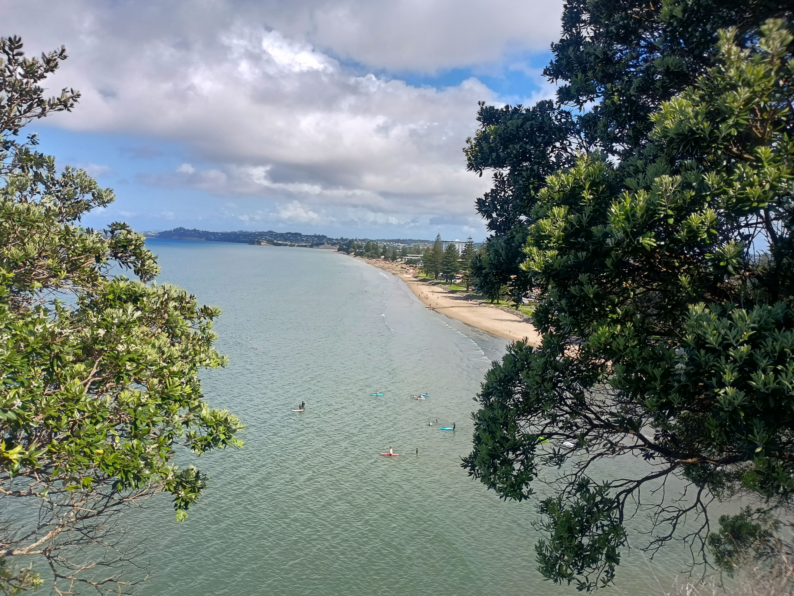
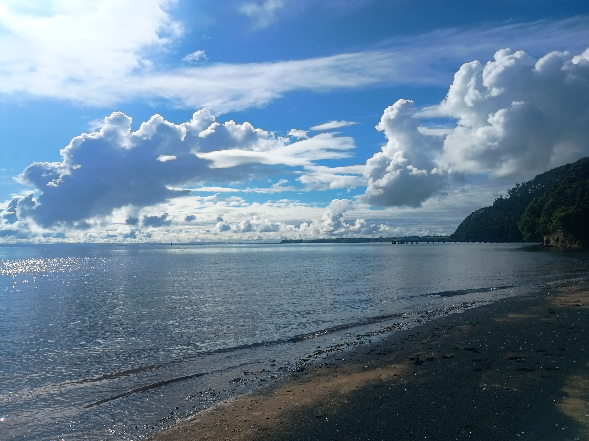

Valle Geotérmico en Ebullición

Descripción:
Una impactante e icónica imagen de la actividad geotérmica de Nueva Zelanda (característica de la región de Rotorua). Grandes columnas de vapor efervescente emergen de la tierra gris y mineralizada en el centro del valle...
Última actualización 30 de mayo de 2026
Grandes columnas de vapor emergen de la tierra gris en Rotorua...
La Inmensidad Verde y los Senderos Ocultos

Descripción:
Para entender Nueva Zelanda, hay que adentrarse en sus bosques. El senderismo (o tramping, como lo llaman los locales) es casi una religión aquí. Los senderos te llevan a través de una vegetación prehistórica, dominada por majestuosos helechos arborescentes que te hacen sentir en otra era. Al subir a los miradores más altos, el denso follaje se abre para revelar vistas impresionantes donde los lagos de agua cristalina se encuentran con los brazos del océano.
Última actualización 30 de mayo de 2026
Una ventana natural entre los helechos nativos hacia las profundas aguas azules de Nueva Zelanda.
Bahías Protegidas y Praderas Sin Fin

Descripción:
Uno de los contrastes más hermosos de la geografía neozelandesa es la forma en que las colinas de pastizales verdes caen suavemente hacia el mar. Las bahías de la Isla Norte y la Isla Sur suelen albergar playas escondidas y aguas tranquilas, ideales para el descanso o para avistar la fauna marina local. Desde lo alto de los acantilados, las vistas panorámicas muestran la perfecta armonía entre el campo y el océano.
Última actualización 30 de mayo de 2026
Vista panorámica desde las colinas verdes hacia una bahía resguardada, un reflejo de la tranquilidad costera del país.